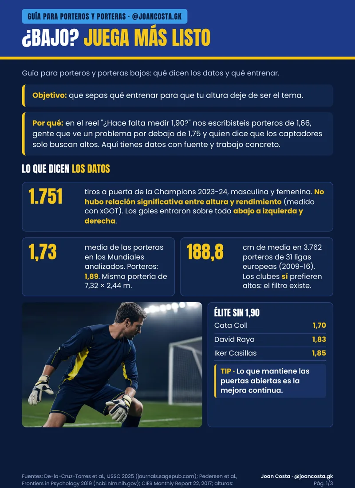
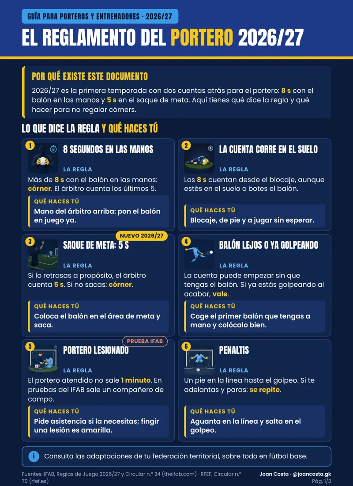

ALTURA¿Bajo? Juega más listo
Guía para porteros y porteras bajos: convierte tu altura en ventaja.
joancosta.gk/altura
Descargar PDF Portero desde 2008. Lo que aprendo bajo palos lo convierto en guías y herramientas gratis para porteros, porteras y entrenadores.

Elige el corte que va con tu mano y calcula tu talla en cada marca.
Abrir la guía → HerramientaApunta cada gol que encajas en menos de un minuto y mira dónde, cómo y por qué te marcan. Gratis, sin cuentas. Tus datos se guardan solo en este dispositivo.
Analizar mis goles →PDF de descarga directa.

ALTURAGuía para porteros y porteras bajos: convierte tu altura en ventaja.

REGLASTodas las reglas que afectan al portero, claras y al día.